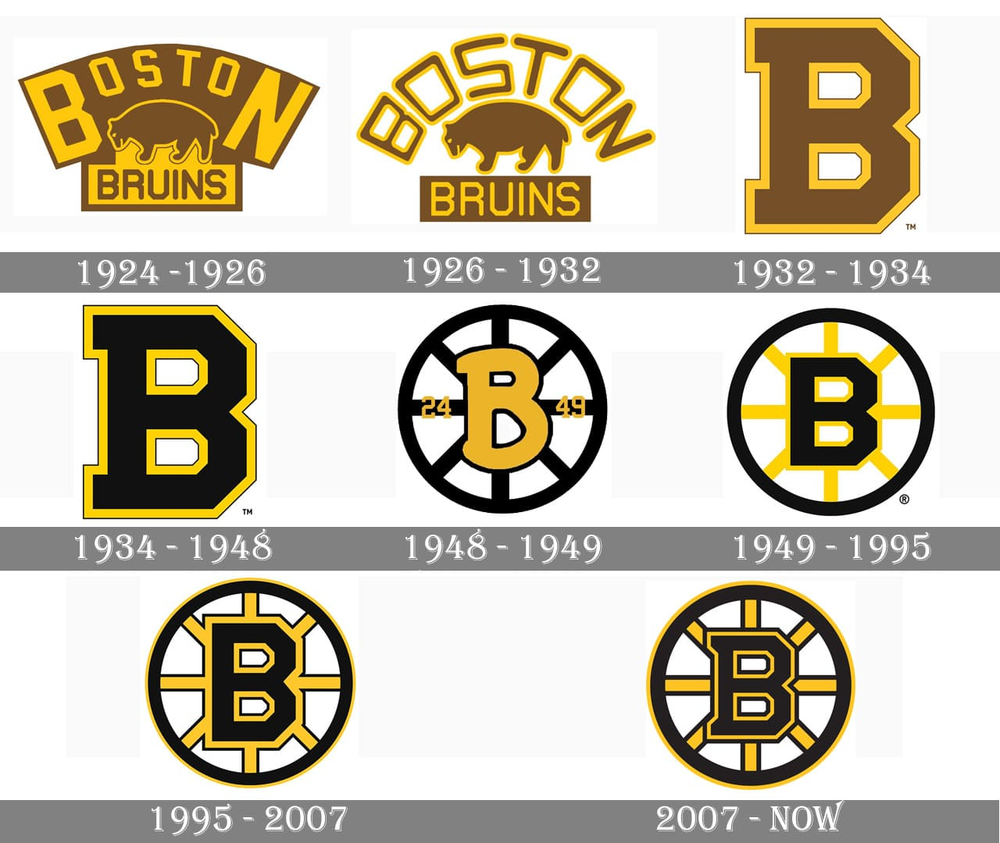

Boston Bruins
The Boston Bruins are a hockey team in the National Hockey League (NHL). The Bruins were one of the first six teams to play in the NHL. The team was founded on November 1, 1924. They play in the Atlantic division in the Eastern Conference. Their home arena is TD Garden in Boston, Massachusetts. The Bruins have won 6 Stanley Cups the most recent one being in 2011.
2018-2019 Season
The Bruins finished second in the Atlantic division during the regular season. Their first opponet in the postseason were the Toronto Maple Leaves. They beat them in the series 4-3 with the win in game 7. Their next opponnets were the Columbus Blue Jackets. They beat them in the series 4-2 The next team they faced were the Carolina Hurricanes for the Eastern Conference title. They procceed to beat the Hurricanes winning the series 4-0 The next team they faced was the St. Louis Blues for the Stanley Cup. This was a devestating lost as the series went out to a game 7 that the Bruins lost.
Franchise Leaders
Point Leaders
- Ray Bourque (1,509)
- John Bucyk (1,339)
- Phil Esposito (1,012)
Goal Leaders
- John Bucyk (545)
- Phil Esposito (459)
- Rick Middleton (402)
Assists Leaders
- Ray Borque (1,111)
- John Bucyk (794)
- Bobby Orr (624)
+/- Leaders
- Bobby Orr (+574)
- Ray Borque (+493)
- Dallas Smith (+331)
2019-2020 Roster
Forwards
Defense
Goalies
2019-2020 Scheduale
This year the Bruins will play 82 games. Their first game is away October 3 against the Dallas Stars. Their last regular season game is home April 4 against the Carolina Hurricanes. Games to watch will be October 26 at 7:00pm against the St.Louis Blues. It will be a good game since these teams played for the Stanley Cup. The Bruins will want redemption for the loss they got. Another good game to watch will be Novemeber 5 at 7:00pm against the Bruins rivals the Montreal Canandians. The Bruins home opener will be on October 12 at 7:00pm against the New Jersey Devils. The Bruins will want to win there first home game. The Devils will be a tough team having a great offseason by getting many players to make their team good.
2019-2020 season standings
:no_upscale()/cdn.vox-cdn.com/uploads/chorus_asset/file/16677061/BsSchedule.png)
Logo image found from 1000logos.net
Sceduale image found from stanleycupofchowder.com